Chapter 18: Adaptive Specific Host Defenses¶
Introduction¶
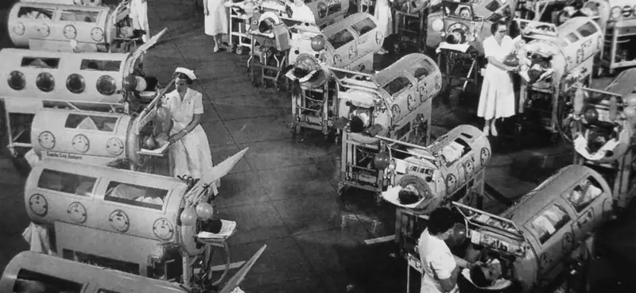
People living in developed nations and born in the 1960s or later may have difficulty understanding the once heavy burden of devastating infectious diseases. For example, smallpox, a deadly viral disease, once destroyed entire civilizations but has since been eradicated. Thanks to the vaccination efforts by multiple groups, including the World Health Organization, Rotary International, and the United Nations Children’s Fund (UNICEF), smallpox has not been diagnosed in a patient since 1977. Polio is another excellent example. This crippling viral disease paralyzed patients, who were often kept alive in “iron lung wards” as recently as the 1950s (Figure 18.1). Today, vaccination against polio has nearly eradicated the disease. Vaccines have also reduced the prevalence of once-common infectious diseases such as chickenpox, German measles, measles, mumps, and whooping cough. The success of these and other vaccines is due to the very specific and adaptive host defenses that are the focus of this chapter.
Innate Nonspecific Host Defenses described innate immunity against microbial pathogens. Higher animals, such as humans, also possess an adaptive immune defense, which is highly specific for individual microbial pathogens. This specific adaptive immunity is acquired through active infection or vaccination and serves as an important defense against pathogens that evade the defenses of innate immunity.
18.1 Overview of Specific Adaptive Immunity¶
Learning Objectives
By the end of this section, you will be able to:
- Define memory, primary response, secondary response, and specificity
- Distinguish between humoral and cellular immunity
- Differentiate between antigens, epitopes, and haptens
- Describe the structure and function of antibodies and distinguish between the different classes of antibodies
Clinical Focus: Part 1
Olivia, a one-year old infant, is brought to the emergency room by her parents, who report her symptoms: excessive crying, irritability, sensitivity to light, unusual lethargy, and vomiting. A physician feels swollen lymph nodes in Olivia’s throat and armpits. In addition, the area of the abdomen over the spleen is swollen and tender.
- What do these symptoms suggest?
- What tests might be ordered to try to diagnose the problem?
Jump to the next Clinical Focus box.
Adaptive immunity is defined by two important characteristics: specificity and memory. Specificity refers to the adaptive immune system’s ability to target specific pathogens, and memory refers to its ability to quickly respond to pathogens to which it has previously been exposed. For example, when an individual recovers from chickenpox, the body develops a memory of the infection that will specifically protect it from the causative agent, the varicella-zoster virus, if it is exposed to the virus again later.
Specificity and memory are achieved by essentially programming certain cells involved in the immune response to respond rapidly to subsequent exposures of the pathogen. This programming occurs as a result of the first exposure to a pathogen or vaccine, which triggers a primary response. Subsequent exposures result in a secondary response that is faster and stronger as a result of the body’s memory of the first exposure (Figure 18.2). This secondary response, however, is specific to the pathogen in question. For example, exposure to one virus (e.g., varicella-zoster virus) will not provide protection against other viral diseases (e.g., measles, mumps, or polio).
Adaptive specific immunity involves the actions of two distinct cell types: B lymphocytes (B cells) and T lymphocytes (T cells). Although B cells and T cells arise from a common hematopoietic stem cell differentiation pathway (see Figure 17.12), their sites of maturation and their roles in adaptive immunity are very different.
B cells mature in the bone marrow and are responsible for the production of glycoproteins called antibodies, or immunoglobulins. Antibodies are involved in the body’s defense against pathogens and toxins in the extracellular environment. Mechanisms of adaptive specific immunity that involve B cells and antibody production are referred to as humoral immunity. The maturation of T cells occurs in the thymus. T cells function as the central orchestrator of both innate and adaptive immune responses. They are also responsible for destruction of cells infected with intracellular pathogens. The targeting and destruction of intracellular pathogens by T cells is called cell-mediated immunity, or cellular immunity.
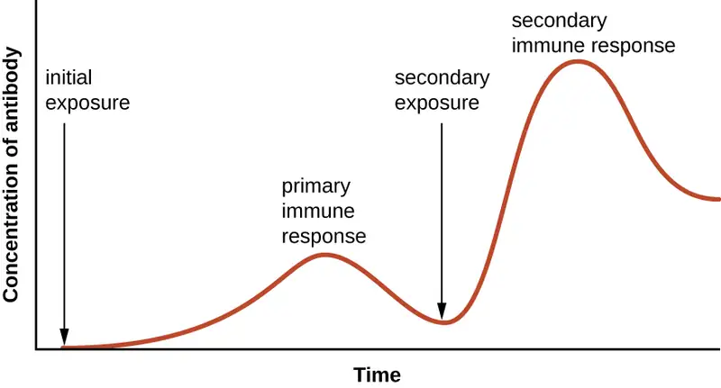
Check Your Understanding
- List the two defining characteristics of adaptive immunity.
- Explain the difference between a primary and secondary immune response.
- How do humoral and cellular immunity differ?
Antigens¶
Activation of the adaptive immune defenses is triggered by pathogen-specific molecular structures called antigens. Antigens are similar to the pathogen-associated molecular patterns (PAMPs) discussed in Pathogen Recognition and Phagocytosis; however, whereas PAMPs are molecular structures found on numerous pathogens, antigens are unique to a specific pathogen. The antigens that stimulate adaptive immunity to chickenpox, for example, are unique to the varicella-zoster virus but significantly different from the antigens associated with other viral pathogens.
The term antigen was initially used to describe molecules that stimulate the production of antibodies; in fact, the term comes from a combination of the words antibody and generator, and a molecule that stimulates antibody production is said to be antigenic. However, the role of antigens is not limited to humoral immunity and the production of antibodies; antigens also play an essential role in stimulating cellular immunity, and for this reason antigens are sometimes more accurately referred to as immunogens. In this text, however, we will typically refer to them as antigens.
Pathogens possess a variety of structures that may contain antigens. For example, antigens from bacterial cells may be associated with their capsules, cell walls, fimbriae, flagella, or pili. Bacterial antigens may also be associated with extracellular toxins and enzymes that they secrete. Viruses possess a variety of antigens associated with their capsids, envelopes, and the spike structures they use for attachment to cells.
Antigens may belong to any number of molecular classes, including carbohydrates, lipids, nucleic acids, proteins, and combinations of these molecules. Antigens of different classes vary in their ability to stimulate adaptive immune defenses as well as in the type of response they stimulate (humoral or cellular). The structural complexity of an antigenic molecule is an important factor in its antigenic potential. In general, more complex molecules are more effective as antigens. For example, the three-dimensional complex structure of proteins make them the most effective and potent antigens, capable of stimulating both humoral and cellular immunity. In comparison, carbohydrates are less complex in structure and therefore less effective as antigens; they can only stimulate humoral immune defenses. Lipids and nucleic acids are the least antigenic molecules, and in some cases may only become antigenic when combined with proteins or carbohydrates to form glycolipids, lipoproteins, or nucleoproteins.
One reason the three-dimensional complexity of antigens is so important is that antibodies and T cells do not recognize and interact with an entire antigen but with smaller exposed regions on the surface of antigens called epitopes. A single antigen may possess several different epitopes (Figure 18.3), and different antibodies may bind to different epitopes on the same antigen (Figure 18.4). For example, the bacterial flagellum is a large, complex protein structure that can possess hundreds or even thousands of epitopes with unique three-dimensional structures. Moreover, flagella from different bacterial species (or even strains of the same species) contain unique epitopes that can only be bound by specific antibodies.
An antigen’s size is another important factor in its antigenic potential. Whereas large antigenic structures like flagella possess multiple epitopes, some molecules are too small to be antigenic by themselves. Such molecules, called haptens, are essentially free epitopes that are not part of the complex three-dimensional structure of a larger antigen. For a hapten to become antigenic, it must first attach to a larger carrier molecule (usually a protein) to produce a conjugate antigen. The hapten-specific antibodies produced in response to the conjugate antigen are then able to interact with unconjugated free hapten molecules. Haptens are not known to be associated with any specific pathogens, but they are responsible for some allergic responses. For example, the hapten urushiol, a molecule found in the oil of plants that cause poison ivy, causes an immune response that can result in a severe rash (called contact dermatitis). Similarly, the hapten penicillin can cause allergic reactions to drugs in the penicillin class.
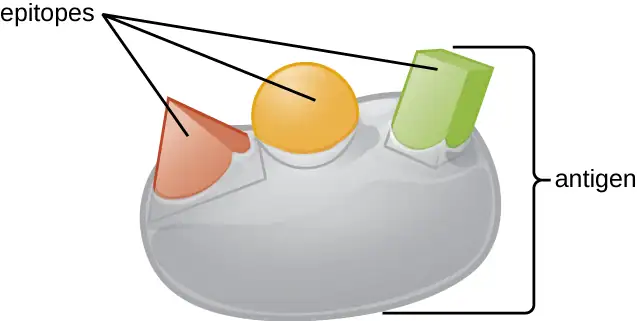
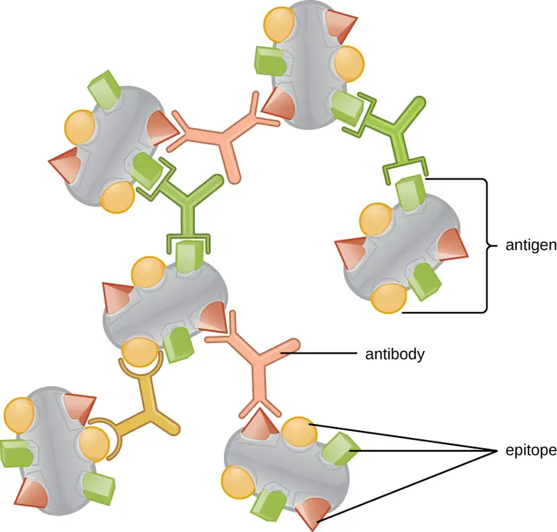
Check Your Understanding
- What is the difference between an antigen and an epitope?
- What factors affect an antigen’s antigenic potential?
- Why are haptens typically not antigenic, and how do they become antigenic?
Antibodies¶
Antibodies (also called immunoglobulins) are glycoproteins that are present in both the blood and tissue fluids. The basic structure of an antibody monomer consists of four protein chains held together by disulfide bonds (Figure 18.5). A disulfide bond is a covalent bond between the sulfhydryl R groups found on two cysteine amino acids. The two largest chains are identical to each other and are called the heavy chains. The two smaller chains are also identical to each other and are called the light chains. Joined together, the heavy and light chains form a basic Y-shaped structure.
The two ‘arms’ of the Y-shaped antibody molecule are known as the Fab region, for “fragment of antigen binding.” The far end of the Fab region is the variable region, which serves as the site of antigen binding. The amino acid sequence in the variable region dictates the three-dimensional structure, and thus the specific three-dimensional epitope to which the Fab region is capable of binding. Although the epitope specificity of the Fab regions is identical for each arm of a single antibody molecule, this region displays a high degree of variability between antibodies with different epitope specificities. Binding to the Fab region is necessary for neutralization of pathogens, agglutination or aggregation of pathogens, and antibody-dependent cell-mediated cytotoxicity.
The constant region of the antibody molecule includes the trunk of the Y and lower portion of each arm of the Y. The trunk of the Y is also called the Fc region, for “fragment of crystallization,” and is the site of complement factor binding and binding to phagocytic cells during antibody-mediated opsonization.
![a) An antibody is a Y shape made of four strands. The two inner strands form the actual Y shape and are the heavy chains. The two light chains sit on the outsides of the top regions of the Y. The bottom portion of the Y (made of only heavy chains) is called the Fc Region. The Fc region along with half of the top portion of the Y (made of both light and heavy chains) is the constant regions. The variable region is the very tips of the Y and is made of both light and heavy chains. The antigen binding site is in the variable region. Disulfide bridges hold the antigen’s shape. B) a space filling model of the antigen.](img/osc-microbio-18-04-abstruct.webp)
Check Your Understanding
- Describe the different functions of the Fab region and the Fc region.
Antibody Classes¶
The constant region of an antibody molecule determines its class, or isotype. The five classes of antibodies are IgG, IgM, IgA, IgD, and IgE. Each class possesses unique heavy chains designated by Greek letters γ, μ, α, δ, and ε, respectively. Antibody classes also exhibit important differences in abundance in serum, arrangement, body sites of action, functional roles, and size (Figure 18.6).
IgG is a monomer that is by far the most abundant antibody in human blood, accounting for about 80% of total serum antibody. IgG penetrates efficiently into tissue spaces, and is the only antibody class with the ability to cross the placental barrier, providing passive immunity to the developing fetus during pregnancy. IgG is also the most versatile antibody class in terms of its role in the body’s defense against pathogens.
IgM is initially produced in a monomeric membrane-bound form that serves as an antigen-binding receptor on B cells. The secreted form of IgM assembles into a pentamer with five monomers of IgM bound together by a protein structure called the J chain. Although the location of the J chain relative to the Fc regions of the five monomers prevents IgM from performing some of the functions of IgG, the ten available Fab sites associated with a pentameric IgM make it an important antibody in the body’s arsenal of defenses. IgM is the first antibody produced and secreted by B cells during the primary and secondary immune responses, making pathogen-specific IgM a valuable diagnostic marker during active or recent infections.
IgA accounts for about 13% of total serum antibody, and secretory IgA is the most common and abundant antibody class found in the mucus secretions that protect the mucous membranes. IgA can also be found in other secretions such as breast milk, tears, and saliva. Secretory IgA is assembled into a dimeric form with two monomers joined by a protein structure called the secretory component. One of the important functions of secretory IgA is to trap pathogens in mucus so that they can later be eliminated from the body.
Similar to IgM, IgD is a membrane-bound monomer found on the surface of B cells, where it serves as an antigen-binding receptor. However, IgD is not secreted by B cells, and only trace amounts are detected in serum. These trace amounts most likely come from the degradation of old B cells and the release of IgD molecules from their cytoplasmic membranes.
IgE is the least abundant antibody class in serum. Like IgG, it is secreted as a monomer, but its role in adaptive immunity is restricted to anti-parasitic defenses. The Fc region of IgE binds to basophils and mast cells. The Fab region of the bound IgE then interacts with specific antigen epitopes, causing the cells to release potent pro-inflammatory mediators. The inflammatory reaction resulting from the activation of mast cells and basophils aids in the defense against parasites, but this reaction is also central to allergic reactions (see Diseases of the Immune System.
![Table titled: The five immunoglobulin (Ig) classes. IgG monomer is a Y shaped molecule; the heavy chain is gamma, it has 2 antigen binding sites and a molecular weight of 150,000 daltons. It makes up 80% of the total antibodies in the serum. It crosses the placenta and fixes compliments and the Fc binds to phagocytes. It’s functions are: Neutralization, agglutination, complement activation, opsonization, and antibody-dependent cell-mediated cytotoxicity. IgM pentamer is 5 Y’s bound at their bases; the heavy chain is mu, it has 10 antigen binding sites and a molecular weight of 900,000 daltons. It makes up 6% of the total antibodies in the serum. It does not cross the placenta but does fix compliments and the Fc does not bind to a particular cell type. It’s functions are: Neutralization, agglutination, and complement activation. The monomer form serves as the B cell receptor. IgA dimer is 2 Y’s bound at their bases; the heavy chain is alpha, it has 4 antigen binding sites and a molecular weight of 385,000 daltons. It makes up 13% of the total antibodies in the serum. It does not cross the placenta nor fix compliments and the Fc does not bind to a particular cell type. It’s functions are: Neutralization and trapping of pathogens in mucus. IgD monomer is 1 Y; the heavy chain is delta, it has 2 antigen binding sites and a molecular weight of 180,000 daltons. It makes up <1% of the total antibodies in the serum. It does not cross the placenta nor fix compliments and the Fc does not bind to a particular cell type. It’s functions are: B cell receptors. IgE monomer is 1 Y; the heavy chain is epsilon, it has 2 antigen binding sites and a molecular weight of 200,000 daltons. It makes up <1% of the total antibodies in the serum. It does not cross the placenta nor fix compliments. The Fc binds to mast cells and basophils. It’s functions are: Activation of basophils and mast cells against parasites and allergens.](img/osc-microbio-18-04-abclasstbl.webp)
Check Your Understanding
- What part of an antibody molecule determines its class?
- What class of antibody is involved in protection against parasites?
- Describe the difference in structure between IgM and IgG.
Antigen-Antibody Interactions¶
Different classes of antibody play important roles in the body’s defense against pathogens. These functions include neutralization of pathogens, opsonization for phagocytosis, agglutination, complement activation, and antibody-dependent cell-mediated cytotoxicity. For most of these functions, antibodies also provide an important link between adaptive specific immunity and innate nonspecific immunity.
Neutralization involves the binding of certain antibodies (IgG, IgM, or IgA) to epitopes on the surface of pathogens or toxins, preventing their attachment to cells. For example, Secretory IgA can bind to specific pathogens and block initial attachment to intestinal mucosal cells. Similarly, specific antibodies can bind to certain toxins, blocking them from attaching to target cells and thus neutralizing their toxic effects. Viruses can be neutralized and prevented from infecting a cell by the same mechanism (Figure 18.7).
As described in Chemical Defenses, opsonization is the coating of a pathogen with molecules, such as complement factors, C-reactive protein, and serum amyloid A, to assist in phagocyte binding to facilitate phagocytosis. IgG antibodies also serve as excellent opsonins, binding their Fab sites to specific epitopes on the surface of pathogens. Phagocytic cells such as macrophages, dendritic cells, and neutrophils have receptors on their surfaces that recognize and bind to the Fc portion of the IgG molecules; thus, IgG helps such phagocytes attach to and engulf the pathogens they have bound (Figure 18.8).
Agglutination or aggregation involves the cross-linking of pathogens by antibodies to create large aggregates (Figure 18.9). IgG has two Fab antigen-binding sites, which can bind to two separate pathogen cells, clumping them together. When multiple IgG antibodies are involved, large aggregates can develop; these aggregates are easier for the kidneys and spleen to filter from the blood and easier for phagocytes to ingest for destruction. The pentameric structure of IgM provides ten Fab binding sites per molecule, making it the most efficient antibody for agglutination.
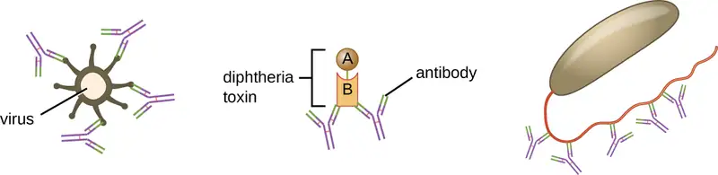
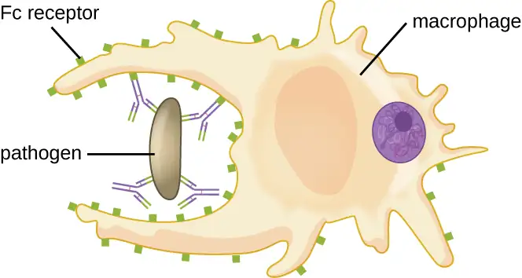
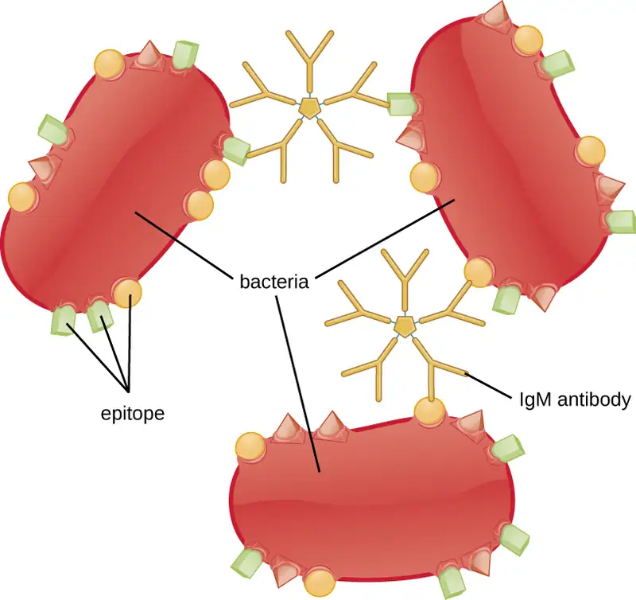
Another important function of antibodies is activation of the complement cascade. As discussed in the previous chapter, the complement system is an important component of the innate defenses, promoting the inflammatory response, recruiting phagocytes to site of infection, enhancing phagocytosis by opsonization, and killing gram-negative bacterial pathogens with the membrane attack complex (MAC). Complement activation can occur through three different pathways (see Figure 17.9), but the most efficient is the classical pathway, which requires the initial binding of IgG or IgM antibodies to the surface of a pathogen cell, allowing for recruitment and activation of the C1 complex.
Yet another important function of antibodies is antibody-dependent cell-mediated cytotoxicity (ADCC), which enhances killing of pathogens that are too large to be phagocytosed. This process is best characterized for natural killer cells (NK cells), as shown in Figure 18.10, but it can also involve macrophages and eosinophils. ADCC occurs when the Fab region of an IgG antibody binds to a large pathogen; Fc receptors on effector cells (e.g., NK cells) then bind to the Fc region of the antibody, bringing them into close proximity with the target pathogen. The effector cell then secretes powerful cytotoxins (e.g., perforin and granzymes) that kill the pathogen.
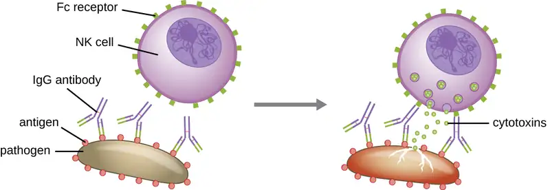
Check Your Understanding
- Where is IgA normally found?
- Which class of antibody crosses the placenta, providing protection to the fetus?
- Compare the mechanisms of opsonization and antibody-dependent cell-mediated cytotoxicity.
18.2 Major Histocompatibility Complexes and Antigen-Presenting Cells¶
Learning Objectives
By the end of this section, you will be able to:
- Identify cells that express MHC I and/or MHC II molecules and describe the structures and cellular location of MHC I and MHC II molecules
- Identify the cells that are antigen-presenting cells
- Describe the process of antigen processing and presentation with MHC I and MHC II
As discussed in Cellular Defenses, major histocompatibility complex (MHC) molecules are expressed on the surface of healthy cells, identifying them as normal and “self” to natural killer (NK) cells. MHC molecules also play an important role in the presentation of foreign antigens, which is a critical step in the activation of T cells and thus an important mechanism of the adaptive immune system.
Major Histocompatibility Complex Molecules¶
The major histocompatibility complex (MHC) is a collection of genes coding for MHC molecules found on the surface of all nucleated cells of the body. In humans, the MHC genes are also referred to as human leukocyte antigen (HLA) genes. Mature red blood cells, which lack a nucleus, are the only cells that do not express MHC molecules on their surface.
There are two classes of MHC molecules involved in adaptive immunity, MHC I and MHC II (Figure 18.11). MHC I molecules are found on all nucleated cells; they present normal self-antigens as well as abnormal or nonself pathogens to the effector T cells involved in cellular immunity. In contrast, MHC II molecules are only found on macrophages, dendritic cells, and B cells; they present abnormal or nonself pathogen antigens for the initial activation of T cells.
Both types of MHC molecules are transmembrane glycoproteins that assemble as dimers in the cytoplasmic membrane of cells, but their structures are quite different. MHC I molecules are composed of a longer α protein chain coupled with a smaller β2 microglobulin protein, and only the α chain spans the cytoplasmic membrane. The α chain of the MHC I molecule folds into three separate domains: α1, α2 and α3. MHC II molecules are composed of two protein chains (an α and a β chain) that are approximately similar in length. Both chains of the MHC II molecule possess portions that span the plasma membrane, and each chain folds into two separate domains: α1 and α2, and β1, and β2. In order to present abnormal or non-self-antigens to T cells, MHC molecules have a cleft that serves as the antigen-binding site near the “top” (or outermost) portion of the MHC-I or MHC-II dimer. For MHC I, the antigen-binding cleft is formed by the α1 and α2 domains, whereas for MHC II, the cleft is formed by the α1 and β1 domains (Figure 18.11).
![Drawing of a phospholipid bilayer (plasma membrane). An MHC Class I protein molecule is found in all nucleated body cells. It has a linear portion in the membrane and four portions on the outer side of the cell. One of these portions connects to the membrane spanning portion; two form the antigen binding site; and the fourth is labeled the Beta-2 microglobulin. MHC Class II protein molecules are found in lymphocytes and macrophages. This has two membrane spanning portions (each attached to a portion on the outside of the cell). The two portions attached to these form the antigen binding site.](img/osc-microbio-18-02-mhcbind.webp)
Check Your Understanding
- Compare the structures of the MHC I and MHC II molecules.
Antigen-Presenting Cells (APCs)¶
All nucleated cells in the body have mechanisms for processing and presenting antigens in association with MHC molecules. This signals the immune system, indicating whether the cell is normal and healthy or infected with an intracellular pathogen. However, only macrophages, dendritic cells, and B cells have the ability to present antigens specifically for the purpose of activating T cells; for this reason, these types of cells are sometimes referred to as antigen-presenting cells (APCs).
While all APCs play a similar role in adaptive immunity, there are some important differences to consider. Macrophages and dendritic cells are phagocytes that ingest and kill pathogens that penetrate the first-line barriers (i.e., skin and mucous membranes). B cells, on the other hand, do not function as phagocytes but play a primary role in the production and secretion of antibodies. In addition, whereas macrophages and dendritic cells recognize pathogens through nonspecific receptor interactions (e.g., PAMPs, toll-like receptors, and receptors for opsonizing complement or antibody), B cells interact with foreign pathogens or their free antigens using antigen-specific immunoglobulin as receptors (monomeric IgD and IgM). When the immunoglobulin receptors bind to an antigen, the B cell internalizes the antigen by endocytosis before processing and presentting the antigen to T cells.
Antigen Presentation with MHC II Molecules¶
MHC II molecules are only found on the surface of APCs. Macrophages and dendritic cells use similar mechanisms for processing and presentation of antigens and their epitopes in association with MHC II; B cells use somewhat different mechanisms that will be described further in B Lymphocytes and Humoral Immunity. For now, we will focus on the steps of the process as they pertain to dendritic cells.
After a dendritic cell recognizes and attaches to a pathogen cell, the pathogen is internalized by phagocytosis and is initially contained within a phagosome. Lysosomes containing antimicrobial enzymes and chemicals fuse with the phagosome to create a phagolysosome, where degradation of the pathogen for antigen processing begins. Proteases (protein-degrading) are especially important in antigen processing because only protein antigen epitopes are presented to T cells by MHC II (Figure 18.12).
APCs do not present all possible epitopes to T cells; only a selection of the most antigenic or immunodominant epitopes are presented. The mechanism by which epitopes are selected for processing and presentation by an APC is complicated and not well understood; however, once the most antigenic, immunodominant epitopes have been processed, they associate within the antigen-binding cleft of MHC II molecules and are translocated to the cell surface of the dendritic cell for presentation to T cells.
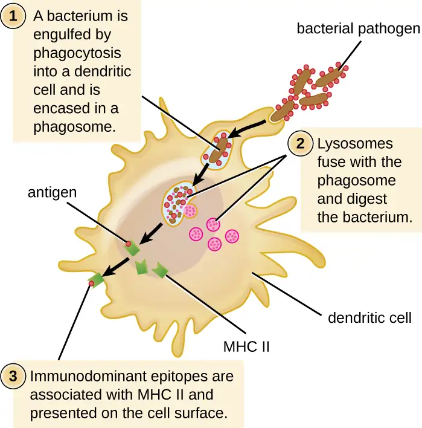
Check Your Understanding
- What are the three kinds of APCs?
- What role to MHC II molecules play in antigen presentation?
- What is the role of antigen presentation in adaptive immunity?
Antigen Presentation with MHC I Molecules¶
MHC I molecules, found on all normal, healthy, nucleated cells, signal to the immune system that the cell is a normal “self” cell. In a healthy cell, proteins normally found in the cytoplasm are degraded by proteasomes (enzyme complexes responsible for degradation and processing of proteins) and processed into self-antigen epitopes; these self-antigen epitopes bind within the MHC I antigen-binding cleft and are then presented on the cell surface. Immune cells, such as NK cells, recognize these self-antigens and do not target the cell for destruction. However, if a cell becomes infected with an intracellular pathogen (e.g., a virus), protein antigens specific to the pathogen are processed in the proteasomes and bind with MHC I molecules for presentation on the cell surface. This presentation of pathogen-specific antigens with MHC I signals that the infected cell must be targeted for destruction along with the pathogen.
Before elimination of infected cells can begin, APCs must first activate the T cells involved in cellular immunity. If an intracellular pathogen directly infects the cytoplasm of an APC, then the processing and presentation of antigens can occur as described (in proteasomes and on the cell surface with MHC I). However, if the intracellular pathogen does not directly infect APCs, an alternative strategy called cross-presentation is utilized. In cross-presentation, antigens are brought into the APC by mechanisms normally leading to presentation with MHC II (i.e., through phagocytosis), but the antigen is presented on an MHC I molecule for CD8 T cells. The exact mechanisms by which cross-presentation occur are not yet well understood, but it appears that cross-presentation is primarily a function of dendritic cells and not macrophages or B cells.
Check Your Understanding
- Compare and contrast antigen processing and presentation associated with MHC I and MHC II molecules.
- What is cross-presentation, and when is it likely to occur?
18.3 T Lymphocytes and Cellular Immunity¶
Learning Objectives
By the end of this section, you will be able to:
- Describe the process of T-cell maturation and thymic selection
- Explain the genetic events that lead to diversity of T-cell receptors
- Compare and contrast the various classes and subtypes of T cells in terms of activation and function
- Explain the mechanism by which superantigens effect unregulated T-cell activation
As explained in Overview of Specific Adaptive Immunity, the antibodies involved in humoral immunity often bind pathogens and toxins before they can attach to and invade host cells. Thus, humoral immunity is primarily concerned with fighting pathogens in extracellular spaces. However, pathogens that have already gained entry to host cells are largely protected from the humoral antibody-mediated defenses. Cellular immunity, on the other hand, targets and eliminates intracellular pathogens through the actions of T lymphocytes, or T cells (Figure 18.13). T cells also play a more central role in orchestrating the overall adaptive immune response (humoral as well as cellular) along with the cellular defenses of innate immunity.
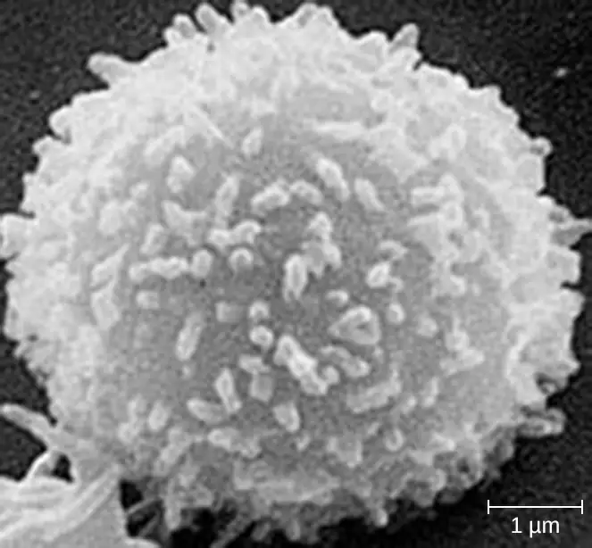
T Cell Production and Maturation¶
T cells, like all other white blood cells involved in innate and adaptive immunity, are formed from multipotent hematopoietic stem cells (HSCs) in the bone marrow (see Figure 17.12). However, unlike the white blood cells of innate immunity, eventual T cells differentiate first into lymphoid stem cells that then become small, immature lymphocytes, sometimes called lymphoblasts. The first steps of differentiation occur in the red marrow of bones (Figure 18.14), after which immature T lymphocytes enter the bloodstream and travel to the thymus for the final steps of maturation (Figure 18.15). Once in the thymus, the immature T lymphocytes are referred to as thymocytes.
The maturation of thymocytes within the thymus can be divided into three critical steps of positive and negative selection, collectively referred to as thymic selection. The first step of thymic selection occurs in the cortex of the thymus and involves the development of a functional T-cell receptor (TCR) that is required for activation by APCs. Thymocytes with defective TCRs are removed by negative selection through the induction of apoptosis (programmed controlled cell death). The second step of thymic selection also occurs in the cortex and involves the positive selection of thymocytes that will interact appropriately with MHC molecules. Thymocytes that can interact appropriately with MHC molecules receive a positive stimulation that moves them further through the process of maturation, whereas thymocytes that do not interact appropriately are not stimulated and are eliminated by apoptosis. The third and final step of thymic selection occurs in both the cortex and medulla and involves negative selection to remove self-reacting thymocytes, those that react to self-antigens, by apoptosis. This final step is sometimes referred to as central tolerance because it prevents self-reacting T cells from reaching the bloodstream and potentially causing autoimmune disease, which occurs when the immune system attacks healthy “self” cells.
Despite central tolerance, some self-reactive T cells generally escape the thymus and enter the peripheral bloodstream. Therefore, a second line of defense called peripheral tolerance is needed to protect against autoimmune disease. Peripheral tolerance involves mechanisms of anergy and inhibition of self-reactive T cells by regulatory T cells. Anergy refers to a state of nonresponsiveness to antigen stimulation. In the case of self-reactive T cells that escape the thymus, lack of an essential co-stimulatory signal required for activation causes anergy and prevents autoimmune activation. Regulatory T cells participate in peripheral tolerance by inhibiting the activation and function of self-reactive T cells and by secreting anti-inflammatory cytokines.
It is not completely understood what events specifically direct maturation of thymocytes into regulatory T cells. Current theories suggest the critical events may occur during the third step of thymic selection, when most self-reactive T cells are eliminated. Regulatory T cells may receive a unique signal that is below the threshold required to target them for negative selection and apoptosis. Consequently, these cells continue to mature and then exit the thymus, armed to inhibit the activation of self-reactive T cells.
It has been estimated that the three steps of thymic selection eliminate 98% of thymocytes. The remaining 2% that exit the thymus migrate through the bloodstream and lymphatic system to sites of secondary lymphoid organs/tissues, such as the lymph nodes, spleen, and tonsils (Figure 18.15), where they await activation through the presentation of specific antigens by APCs. Until they are activated, they are known as mature naïve T cells.
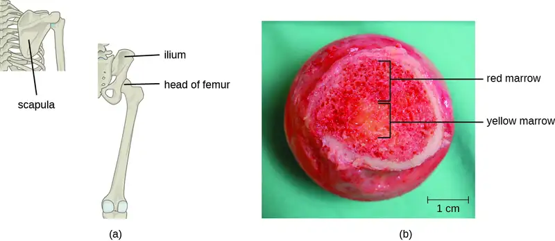
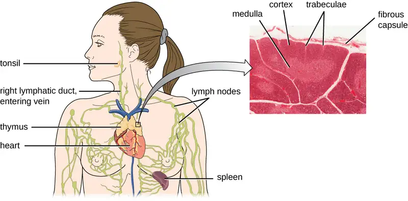
Check Your Understanding
- What anatomical sites are involved in T cell production and maturation?
- What are the three steps involved in thymic selection?
- Why are central tolerance and peripheral tolerance important? What do they prevent?
Classes of T Cells¶
T cells can be categorized into three distinct classes: helper T cells, regulatory T cells, and cytotoxic T cells. These classes are differentiated based on their expression of certain surface molecules, their mode of activation, and their functional roles in adaptive immunity (Table 18.1).
All T cells produce cluster of differentiation (CD) molecules, cell surface glycoproteins that can be used to identify and distinguish between the various types of white blood cells. Although T cells can produce a variety of CD molecules, CD4 and CD8 are the two most important used for differentiation of the classes. Helper T cells and regulatory T cells are characterized by the expression of CD4 on their surface, whereas cytotoxic T cells are characterized by the expression of CD8.
Classes of T cells can also be distinguished by the specific MHC molecules and APCs with which they interact for activation. Helper T cells and regulatory T cells can only be activated by APCs presenting antigens associated with MHC II. In contrast, cytotoxic T cells recognize antigens presented in association with MHC I, either by APCs or by nucleated cells infected with an intracellular pathogen.
The different classes of T cells also play different functional roles in the immune system. Helper T cells serve as the central orchestrators that help activate and direct functions of humoral and cellular immunity. In addition, helper T cells enhance the pathogen-killing functions of macrophages and NK cells of innate immunity. In contrast, the primary role of regulatory T cells is to prevent undesirable and potentially damaging immune responses. Their role in peripheral tolerance, for example, protects against autoimmune disorders, as discussed earlier. Finally, cytotoxic T cells are the primary effector cells for cellular immunity. They recognize and target cells that have been infected by intracellular pathogens, destroying infected cells along with the pathogens inside.
Table 18.1
| Classes of T Cells | |||
|---|---|---|---|
| Class | Surface CD Molecules | Activation | Functions |
| Helper T cells | CD4 | APCs presenting antigens associated with MHC II | Orchestrate humoral and cellular immunity |
| Involved in the activation of macrophages and NK cells | |||
| Regulatory T cells | CD4 | APCs presenting antigens associated with MHC II | Involved in peripheral tolerance and prevention of autoimmune responses |
| Cytotoxic T cells | CD8 | APCs or infected nucleated cells presenting antigens associated with MHC I | Destroy cells infected with intracellular pathogens |
Check Your Understanding
- What are the unique functions of the three classes of T cells?
- Which T cells can be activated by antigens presented by cells other than APCs?
T-Cell Receptors¶
For both helper T cells and cytotoxic T cells, activation is a complex process that requires the interactions of multiple molecules and exposure to cytokines. The T-cell receptor (TCR) is involved in the first step of pathogen epitope recognition during the activation process.
The TCR comes from the same receptor family as the antibodies IgD and IgM, the antigen receptors on the B cell membrane surface, and thus shares common structural elements. Similar to antibodies, the TCR has a variable region and a constant region, and the variable region provides the antigen-binding site (Figure 18.16). However, the structure of TCR is smaller and less complex than the immunoglobulin molecules (Figure 18.5). Whereas immunoglobulins have four peptide chains and Y-shaped structures, the TCR consists of just two peptide chains (α and β chains), both of which span the cytoplasmic membrane of the T cell.
TCRs are epitope-specific, and it has been estimated that 25 million T cells with unique epitope-binding TCRs are required to protect an individual against a wide range of microbial pathogens. Because the human genome only contains about 25,000 genes, we know that each specific TCR cannot be encoded by its own set of genes. This raises the question of how such a vast population of T cells with millions of specific TCRs can be achieved. The answer is a process called genetic rearrangement, which occurs in the thymus during the first step of thymic selection.
The genes that code for the variable regions of the TCR are divided into distinct gene segments called variable (V), diversity (D), and joining (J) segments. The genes segments associated with the α chain of the TCR consist 70 or more different Vα segments and 61 different Jα segments. The gene segments associated with the β chain of the TCR consist of 52 different Vβ segments, two different Dβ segments, and 13 different Jβ segments. During the development of the functional TCR in the thymus, genetic rearrangement in a T cell brings together one Vα segment and one Jα segment to code for the variable region of the α chain. Similarly, genetic rearrangement brings one of the Vβ segments together with one of the Dβ segments and one of thetJβ segments to code for the variable region of the β chain. All the possible combinations of rearrangements between different segments of V, D, and J provide the genetic diversity required to produce millions of TCRs with unique epitope-specific variable regions.
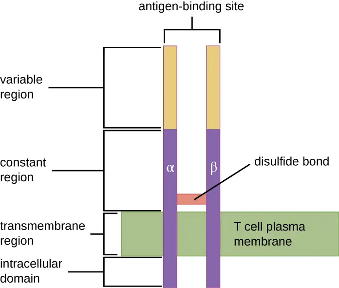
Check Your Understanding
- What are the similarities and differences between TCRs and immunoglobulins?
- What process is used to provide millions of unique TCR binding sites?
Activation and Differentiation of Helper T Cells¶
Helper T cells can only be activated by APCs presenting processed foreign epitopes in association with MHC II. The first step in the activation process is TCR recognition of the specific foreign epitope presented within the MHC II antigen-binding cleft. The second step involves the interaction of CD4 on the helper T cell with a region of the MHC II molecule separate from the antigen-binding cleft. This second interaction anchors the MHC II-TCR complex and ensures that the helper T cell is recognizing both the foreign (“nonself”) epitope and “self” antigen of the APC; both recognitions are required for activation of the cell. In the third step, the APC and T cell secrete cytokines that activate the helper T cell. The activated helper T cell then proliferates, dividing by mitosis to produce clonal naïve helper T cells that differentiate into subtypes with different functions (Figure 18.17).
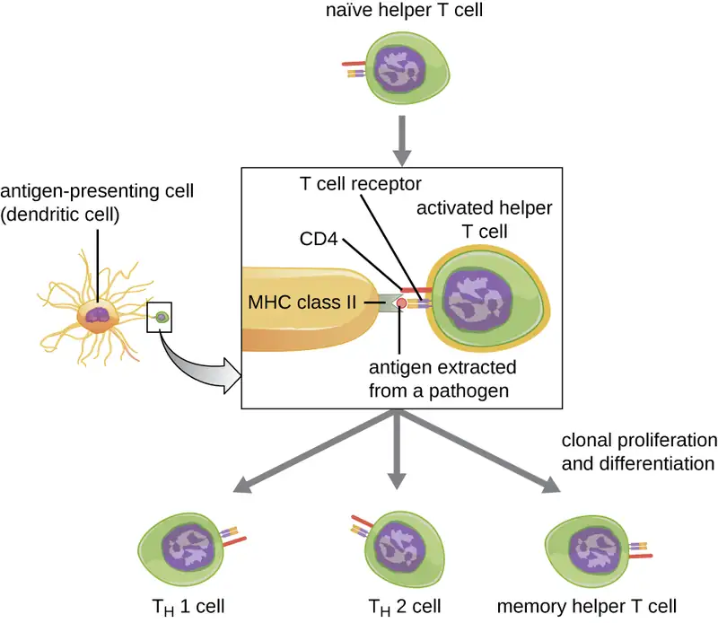
Activated helper T cells can differentiate into one of four distinct subtypes, summarized in Table 18.2. The differentiation process is directed by APC-secreted cytokines. Depending on which APC-secreted cytokines interact with an activated helper T cell, the cell may differentiate into a T helper 1 (TH1) cell, a T helper 2 (TH2) cell, or a memory helper T cell. The two types of helper T cells are relatively short-lived effector cells, meaning that they perform various functions of the immediate immune response. In contrast, memory helper T cells are relatively long lived; they are programmed to “remember” a specific antigen or epitope in order to mount a rapid, strong, secondary response to subsequent exposures.
TH1 cells secrete their own cytokines that are involved in stimulating and orchestrating other cells involved in adaptive and innate immunity. For example, they stimulate cytotoxic T cells, enhancing their killing of infected cells and promoting differentiation into memory cytotoxic T cells. TH1 cells also stimulate macrophages and neutrophils to become more effective in their killing of intracellular bacteria. They can also stimulate NK cells to become more effective at killing target cells.
TH2 cells play an important role in orchestrating the humoral immune response through their secretion of cytokines that activate B cells and direct B cell differentiation and antibody production. Various cytokines produced by TH2 cells orchestrate antibody class switching, which allows B cells to switch between the production of IgM, IgG, IgA, and IgE as needed to carry out specific antibody functions and to provide pathogen-specific humoral immune responses.
A third subtype of helper T cells called TH17 cells was discovered through observations that immunity to some infections is not associated with TH1 or TH2 cells. TH17 cells and the cytokines they produce appear to be specifically responsible for the body’s defense against chronic mucocutaneous infections. Patients who lack sufficient TH17 cells in the mucosa (e.g., HIV patients) may be more susceptible to bacteremia and gastrointestinal infections.1
Table 18.2
| Subtypes of Helper T Cells | |
|---|---|
| Subtype | Functions |
| TH1 cells | Stimulate cytotoxic T cells and produce memory cytotoxic T cells |
| Stimulate macrophages and neutrophils (PMNs) for more effective intracellular killing of pathogens | |
| Stimulate NK cells to kill more effectively | |
| TH2 cells | Stimulate B cell activation and differentiation into plasma cells and memory B cells |
| Direct antibody class switching in B cells | |
| TH17 cells | Stimulate immunity to specific infections such as chronic mucocutaneous infections |
| Memory helper T cells | “Remember” a specific pathogen and mount a strong, rapid secondary response upon re-exposure |
Activation and Differentiation of Cytotoxic T Cells¶
Cytotoxic T cells (also referred to as cytotoxic T lymphocytes, or CTLs) are activated by APCs in a three-step process similar to that of helper T cells. The key difference is that the activation of cytotoxic T cells involves recognition of an antigen presented with MHC I (as opposed to MHC II) and interaction of CD8 (as opposed to CD4) with the receptor complex. After the successful co-recognition of foreign epitope and self-antigen, the production of cytokines by the APC and the cytotoxic T cell activate clonal proliferation and differentiation. Activated cytotoxic T cells can differentiate into effector cytotoxic T cells that target pathogens for destruction or memory cells that are ready to respond to subsequent exposures.
As noted, proliferation and differentiation of cytotoxic T cells is also stimulated by cytokines secreted from TH1 cells activated by the same foreign epitope. The co-stimulation that comes from these TH1 cells is provided by secreted cytokines. Although it is possible for activation of cytotoxic T cells to occur without stimulation from TH1 cells, the activation is not as effective or long-lasting.
Once activated, cytotoxic T cells serve as the effector cells of cellular immunity, recognizing and kill cells infected with intracellular pathogens through a mechanism very similar to that of NK cells. However, whereas NK cells recognize nonspecific signals of cell stress or abnormality, cytotoxic T cells recognize infected cells through antigen presentation of pathogen-specific epitopes associated with MHC I. Once an infected cell is recognized, the TCR of the cytotoxic T cell binds to the epitope and releases perforin and granzymes that destroy the infected cell (Figure 18.18). Perforin is a protein that creates pores in the target cell, and granzymes are proteases that enter the pores and induce apoptosis. This mechanism of programmed cell death is a controlled and efficient means of destroying and removing infected cells without releasing the pathogens inside to infect neighboring cells, as might occur if the infected cells were simply lysed.
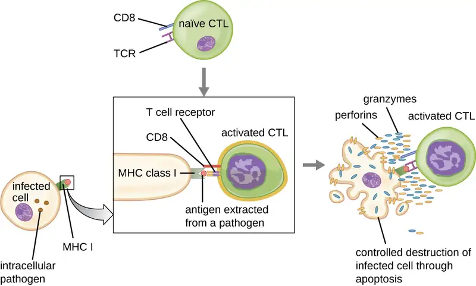
Link to Learning
In this video, you can see a cytotoxic T cell inducing apoptosis in a target cell.
Check Your Understanding
- Compare and contrast the activation of helper T cells and cytotoxic T cells.
- What are the different functions of helper T cell subtypes?
- What is the mechanism of CTL-mediated destruction of infected cells?
Superantigens and Unregulated Activation of T Cells¶
When T cell activation is controlled and regulated, the result is a protective response that is effective in combating infections. However, if T cell activation is unregulated and excessive, the result can be life-threatening. Certain bacterial and viral pathogens produce toxins known as superantigens (see Virulence Factors of Bacterial and Viral Pathogens) that can trigger such an unregulated response. Known bacterial superantigens include toxic shock syndrome toxin (TSST), staphylococcal enterotoxins, streptococcal pyrogenic toxins, streptococcal superantigen, and the streptococcal mitogenic exotoxin. Viruses known to produce superantigens include Epstein-Barr virus (human herpesvirus 4), cytomegalovirus (human herpesvirus 5), and others.
The mechanism of T cell activation by superantigens involves their simultaneous binding to MHC II molecules of APCs and the variable region of the TCR β chain. This binding occurs outside of the antigen-binding cleft of MHC II, so the superantigen will bridge together and activate MHC II and TCR without specific foreign epitope recognition (Figure 18.19). The result is an excessive, uncontrolled release of cytokines, often called a cytokine storm, which stimulates an excessive inflammatory response. This can lead to a dangerous decrease in blood pressure, shock, multi-organ failure, and potentially, death.
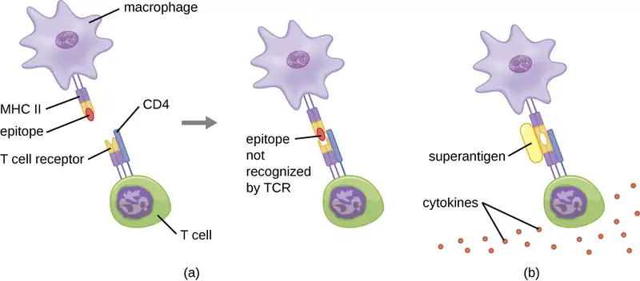
Check Your Understanding
- What are examples of superantigens?
- How does a superantigen activate a helper T cell?
- What effect does a superantigen have on a T cell?
Case in Point: Superantigens
Melissa, an otherwise healthy 22-year-old woman, is brought to the emergency room by her concerned boyfriend. She complains of a sudden onset of high fever, vomiting, diarrhea, and muscle aches. In her initial interview, she tells the attending physician that she is on hormonal birth control and also is two days into the menstruation portion of her cycle. She is on no other medications and is not abusing any drugs or alcohol. She is not a smoker. She is not diabetic and does not currently have an infection of any kind to her knowledge.
While waiting in the emergency room, Melissa’s blood pressure begins to drop dramatically and her mental state deteriorates to general confusion. The physician believes she is likely suffering from toxic shock syndrome (TSS). TSS is caused by the toxin TSST-1, a superantigen associated with Staphylococcus aureus, and improper tampon use is a common cause of infections leading to TSS. The superantigen inappropriately stimulates widespread T cell activation and excessive cytokine release, resulting in a massive and systemic inflammatory response that can be fatal.
Vaginal or cervical swabs may be taken to confirm the presence of the microbe, but these tests are not critical to perform based on Melissa’s symptoms and medical history. The physician prescribes rehydration, supportive therapy, and antibiotics to stem the bacterial infection. She also prescribes drugs to increase Melissa’s blood pressure. Melissa spends three days in the hospital undergoing treatment; in addition, her kidney function is monitored because of the high risk of kidney failure associated with TSS. After 72 hours, Melissa is well enough to be discharged to continue her recovery at home.
- In what way would antibiotic therapy help to combat a superantigen?
Clinical Focus: Part 2
Olivia’s swollen lymph nodes, abdomen, and spleen suggest a strong immune response to a systemic infection in progress. In addition, little Olivia is reluctant to turn her head and appears to be experiencing severe neck pain. The physician orders a complete blood count, blood culture, and lumbar puncture. The cerebrospinal fluid (CSF) obtained appears cloudy and is further evaluated by Gram stain assessment and culturing for potential bacterial pathogens. The complete blood count indicates elevated numbers of white blood cells in Olivia’s bloodstream. The white blood cell increases are recorded at 28.5 K/µL (normal range: 6.0–17.5 K/µL). The neutrophil percentage was recorded as 60% (normal range: 23–45%). Glucose levels in the CSF were registered at 30 mg/100 mL (normal range: 50–80 mg/100 mL). The WBC count in the CSF was 1,163/mm3 (normal range: 5–20/mm3).
- Based on these results, do you have a preliminary diagnosis?
- What is a recommended treatment based on this preliminary diagnosis?
Jump to the next Clinical Focus box. Go back to the previous Clinical Focus box.
18.4 B Lymphocytes and Humoral Immunity¶
Learning Objectives
By the end of this section, you will be able to:
- Describe the production and maturation of B cells
- Compare the structure of B-cell receptors and T-cell receptors
- Compare T-dependent and T-independent activation of B cells
- Compare the primary and secondary antibody responses
Humoral immunity refers to mechanisms of the adaptive immune defenses that are mediated by antibodies secreted by B lymphocytes, or B cells. This section will focus on B cells and discuss their production and maturation, receptors, and mechanisms of activation.
B Cell Production and Maturation¶
Like T cells, B cells are formed from multipotent hematopoietic stem cells (HSCs) in the bone marrow and follow a pathway through lymphoid stem cell and lymphoblast (see Figure 17.12). Unlike T cells, however, lymphoblasts destined to become B cells do not leave the bone marrow and travel to the thymus for maturation. Rather, eventual B cells continue to mature in the bone marrow.
The first step of B cell maturation is an assessment of the functionality of their antigen-binding receptors. This occurs through positive selection for B cells with normal functional receptors. A mechanism of negative selection is then used to eliminate self-reacting B cells and minimize the risk of autoimmunity. Negative selection of self-reacting B cells can involve elimination by apoptosis, editing or modification of the receptors so they are no longer self-reactive, or induction of anergy in the B cell. Immature B cells that pass the selection in the bone marrow then travel to the spleen for their final stages of maturation. There they become naïve mature B cells, i.e., mature B cells that have not yet been activated.
Check Your Understanding
- Compare the maturation of B cells with the maturation of T cells.
B-Cell Receptors¶
Like T cells, B cells possess antigen-specific receptors with diverse specificities. Although they rely on T cells for optimum function, B cells can be activated without help from T cells. B-cell receptors (BCRs) for naïve mature B cells are membrane-bound monomeric forms of IgD and IgM. They have two identical heavy chains and two identical light chains connected by disulfide bonds into a basic “Y” shape (Figure 18.20). The trunk of the Y-shaped molecule, the constant region of the two heavy chains, spans the B cell membrane. The two antigen-binding sites exposed to the exterior of the B cell are involved in the binding of specific pathogen epitopes to initiate the activation process. It is estimated that each naïve mature B cell has upwards of 100,000 BCRs on its membrane, and each of these BCRs has an identical epitope-binding specificity.
In order to be prepared to react to a wide range of microbial epitopes, B cells, like T cells, use genetic rearrangement of hundreds of gene segments to provide the necessary diversity of receptor specificities. The variable region of the BCR heavy chain is made up of V, D, and J segments, similar to the β chain of the TCR. The variable region of the BCR light chain is made up of V and J segments, similar to the α chain of the TCR. Genetic rearrangement of all possible combinations of V-J-D (heavy chain) and V-J (light chain) provides for millions of unique antigen-binding sites for the BCR and for the antibodies secreted after activation.
One important difference between BCRs and TCRs is the way they can interact with antigenic epitopes. Whereas TCRs can only interact with antigenic epitopes that are presented within the antigen-binding cleft of MHC I or MHC II, BCRs do not require antigen presentation with MHC; they can interact with epitopes on free antigens or with epitopes displayed on the surface of intact pathogens. Another important difference is that TCRs only recognize protein epitopes, whereas BCRs can recognize epitopes associated with different molecular classes (e.g., proteins, polysaccharides, lipopolysaccharides).
Activation of B cells occurs through different mechanisms depending on the molecular class of the antigen. Activation of a B cell by a protein antigen requires the B cell to function as an APC, presenting the protein epitopes with MHC II to helper T cells. Because of their dependence on T cells for activation of B cells, protein antigens are classified as T-dependent antigens. In contrast, polysaccharides, lipopolysaccharides, and other nonprotein antigens are considered T-independent antigens because they can activate B cells without antigen processing and presentation to T cells.
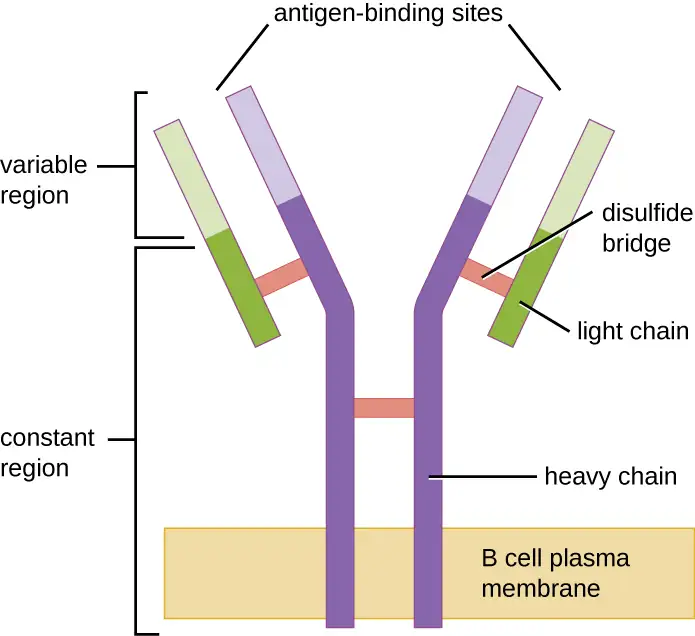
Check Your Understanding
- What types of molecules serve as the BCR?
- What are the differences between TCRs and BCRs with respect to antigen recognition?
- Which molecule classes are T-dependent antigens and which are T-independent antigens?
T Cell-Independent Activation of B cells¶
Activation of B cells without the cooperation of helper T cells is referred to as T cell-independent activation and occurs when BCRs interact with T-independent antigens. T-independent antigens (e.g., polysaccharide capsules, lipopolysaccharide) have repetitive epitope units within their structure, and this repetition allows for the cross-linkage of multiple BCRs, providing the first signal for activation (Figure 18.21). Because T cells are not involved, the second signal has to come from other sources, such as interactions of toll-like receptors with PAMPs or interactions with factors from the complement system.
Once a B cell is activated, it undergoes clonal proliferation and daughter cells differentiate into plasma cells. Plasma cells are antibody factories that secrete large quantities of antibodies. After differentiation, the surface BCRs disappear and the plasma cell secretes pentameric IgM molecules that have the same antigen specificity as the BCRs (Figure 18.21).
The T cell-independent response is short-lived and does not result in the production of memory B cells. Thus it will not result in a secondary response to subsequent exposures to T-independent antigens.
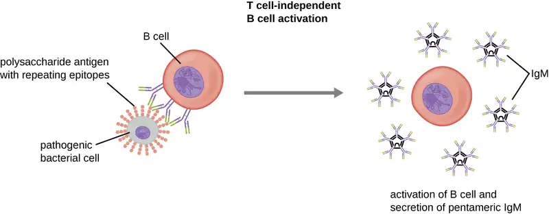
Check Your Understanding
- What are the two signals required for T cell-independent activation of B cells?
- What is the function of a plasma cell?
T Cell-Dependent Activation of B cells¶
T cell-dependent activation of B cells is more complex than T cell-independent activation, but the resulting immune response is stronger and develops memory. T cell-dependent activation can occur either in response to free protein antigens or to protein antigens associated with an intact pathogen. Interaction between the BCRs on a naïve mature B cell and a free protein antigen stimulate internalization of the antigen, whereas interaction with antigens associated with an intact pathogen initiates the extraction of the antigen from the pathogen before internalization. Once internalized inside the B cell, the protein antigen is processed and presented with MHC II. The presented antigen is then recognized by helper T cells specific to the same antigen. The TCR of the helper T cell recognizes the foreign antigen, and the T cell’s CD4 molecule interacts with MHC II on the B cell. The coordination between B cells and helper T cells that are specific to the same antigen is referred to as linked recognition.
Once activated by linked recognition, TH2 cells produce and secrete cytokines that activate the B cell and cause proliferation into clonal daughter cells. After several rounds of proliferation, additional cytokines provided by the TH2 cells stimulate the differentiation of activated B cell clones into memory B cells, which will quickly respond to subsequent exposures to the same protein epitope, and plasma cells that lose their membrane BCRs and initially secrete pentameric IgM (Figure 18.22).
After initial secretion of IgM, cytokines secreted by TH2 cells stimulate the plasma cells to switch from IgM production to production of IgG, IgA, or IgE. This process, called class switching or isotype switching, allows plasma cells cloned from the same activated B cell to produce a variety of antibody classes with the same epitope specificity. Class switching is accomplished by genetic rearrangement of gene segments encoding the constant region, which determines an antibody’s class. The variable region is not changed, so the new class of antibody retains the original epitope specificity.
![1: BCR interaction with antigen on intact pathogen. An antigen on the surface of a bacterium binds to the B cell receptor on the B cell. s: Antigen processing and presentation with MHC II. The antigen is on the MHC II. 3: Antigen presentation and activation of helper T cell. T cell receptor of helper T cell binds to antigen on MHCII. This is stabilized by CD4. Helper T releases cytokines. 4: Cytokines stimulate clonal proliferation and differentiation into memory B cells and antibody-secreting plasma cells.](img/osc-microbio-18-04-bcellact.webp)
Check Your Understanding
- What steps are required for T cell-dependent activation of B cells?
- What is antibody class switching and why is it important?
Primary and Secondary Responses¶
T cell-dependent activation of B cells plays an important role in both the primary and secondary responses associated with adaptive immunity. With the first exposure to a protein antigen, a T cell-dependent primary antibody response occurs. The initial stage of the primary response is a lag period, or latent period, of approximately 10 days, during which no antibody can be detected in serum. This lag period is the time required for all of the steps of the primary response, including naïve mature B cell binding of antigen with BCRs, antigen processing and presentation, helper T cell activation, B cell activation, and clonal proliferation. The end of the lag period is characterized by a rise in IgM levels in the serum, as TH2 cells stimulate B cell differentiation into plasma cells. IgM levels reach their peak around 14 days after primary antigen exposure; at about this same time, TH2 stimulates antibody class switching, and IgM levels in serum begin to decline. Meanwhile, levels of IgG increase until they reach a peak about three weeks into the primary response (Figure 18.23).
During the primary response, some of the cloned B cells are differentiated into memory B cells programmed to respond to subsequent exposures. This secondary response occurs more quickly and forcefully than the primary response. The lag period is decreased to only a few days and the production of IgG is significantly higher than observed for the primary response (Figure 18.23). In addition, the antibodies produced during the secondary response are more effective and bind with higher affinity to the targeted epitopes. Plasma cells produced during secondary responses live longer than those produced during the primary response, so levels of specific antibody remain elevated for a longer period of time.
![Update alt text to: A graph with time on the X axis and antibody concentration in serum. At first there is very little antibody (near 0). The lag period does not see a significant increase. In the primary response, IgM peaks for about 5 days and drops. At the same time IgG increases and then drops. This creates an increase in antibody count with a plateau of about 5 days as both antibody types are present. The secondary response sees a prolonged peak of IgG with a peak of IgM for about 1 to 2 days at about the same time as the peak of IgG. The total antibody is also higher but isn’t at its plateau for as long as it is in the primary response.](img/osc-microbio-18-04-prisec.webp)
Check Your Understanding
- What events occur during the lag period of the primary antibody response?
- Why do antibody levels remain elevated longer during the secondary antibody response?
18.5 Vaccines¶
Learning Objectives
By the end of this section, you will be able to:
- Compare the various kinds of artificial immunity
- Differentiate between variolation and vaccination
- Describe different types of vaccines and explain their respective advantages and disadvantages
For many diseases, prevention is the best form of treatment, and few strategies for disease prevention are as effective as vaccination. Vaccination is a form of artificial immunity. By artificially stimulating the adaptive immune defenses, a vaccine triggers memory cell production similar to that which would occur during a primary response. In so doing, the patient is able to mount a strong secondary response upon exposure to the pathogen—but without having to first suffer through an initial infection. In this section, we will explore several different kinds of artificial immunity along with various types of vaccines and the mechanisms by which they induce artificial immunity.
Classifications of Adaptive Immunity¶
All forms of adaptive immunity can be described as either active or passive. Active immunity refers to the activation of an individual’s own adaptive immune defenses, whereas passive immunity refers to the transfer of adaptive immune defenses from another individual or animal. Active and passive immunity can be further subdivided based on whether the protection is acquired naturally or artificially.
Natural active immunity is adaptive immunity that develops after natural exposure to a pathogen (Figure 18.24). Examples would include the lifelong immunity that develops after recovery from a chickenpox or measles infection (although an acute infection is not always necessary to activate adaptive immunity). The length of time that an individual is protected can vary substantially depending upon the pathogen and antigens involved. For example, activation of adaptive immunity by protein spike structures during an intracellular viral infection can activate lifelong immunity, whereas activation by carbohydrate capsule antigens during an extracellular bacterial infection may activate shorter-term immunity.
Natural passive immunity involves the natural passage of antibodies from a female to a child before and after birth. IgG is the only antibody class that can cross the placenta from a pregnant person's blood to the fetal blood supply. Placental transfer of IgG is an important passive immune defense for the infant, lasting up to six months after birth. Secretory IgA can also be transferred from to an infant through breast milk.
Artificial passive immunity refers to the transfer of antibodies produced by a donor (human or animal) to another individual. This transfer of antibodies may be done as a prophylactic measure (i.e., to prevent disease after exposure to a pathogen) or as a strategy for treating an active infection. For example, artificial passive immunity is commonly used for post-exposure prophylaxis against rabies, hepatitis A, hepatitis B, and chickenpox (in high risk individuals). Active infections treated by artificial passive immunity include cytomegalovirus infections in immunocompromised patients and Ebola virus infections. In 1995, eight patients in the Democratic Republic of the Congo with active Ebola infections were treated with blood transfusions from patients who were recovering from Ebola. Only one of the eight patients died (a 12.5% mortality rate), which was much lower than the expected 80% mortality rate for Ebola in untreated patients.2 Artificial passive immunity is also used for the treatment of diseases caused by bacterial toxins, including tetanus, botulism, and diphtheria.
Artificial active immunity is the foundation for vaccination. It involves the activation of adaptive immunity through the deliberate exposure of an individual to weakened or inactivated pathogens, or preparations consisting of key pathogen antigens.
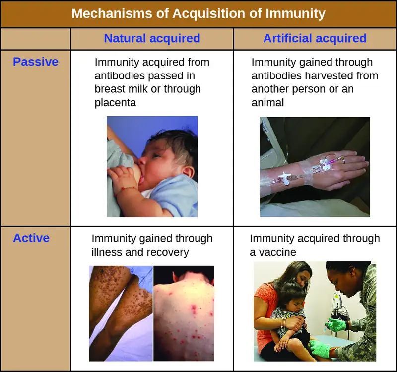
Check Your Understanding
- What is the difference between active and passive immunity?
- What kind of immunity is conferred by a vaccine?
Herd Immunity¶
The four kinds of immunity just described result from an individual’s adaptive immune system. For any given disease, an individual may be considered immune or susceptible depending on their ability to mount an effective immune response upon exposure. Thus, any given population is likely to have some individuals who are immune and other individuals who are susceptible. If a population has very few susceptible individuals, even those susceptible individuals will be protected by a phenomenon called herd immunity. Herd immunity has nothing to do with an individual’s ability to mount an effective immune response; rather, it occurs because there are too few susceptible individuals in a population for the disease to spread effectively.
Vaccination programs create herd immunity by greatly reducing the number of susceptible individuals in a population. Even if some individuals in the population are not vaccinated, as long as a certain percentage is immune (either naturally or artificially), the few susceptible individuals are unlikely to be exposed to the pathogen. However, because new individuals are constantly entering populations (for example, through birth or relocation), vaccination programs are necessary to maintain herd immunity.
Eye on Ethics: Vaccination: Obligation or Choice
A growing number of parents are choosing not to vaccinate their children. They are dubbed “antivaxxers,” and the majority of them believe that vaccines are a cause of autism (or other disease conditions), a link that has now been thoroughly disproven. Others object to vaccines on religious or moral grounds (e.g., the argument that Gardasil vaccination against HPV may promote sexual promiscuity), on personal ethical grounds (e.g., a conscientious objection to any medical intervention), or on political grounds (e.g., the notion that mandatory vaccinations are a violation of individual liberties).3
It is believed that this growing number of unvaccinated individuals has led to new outbreaks of whooping cough and measles. We would expect that herd immunity would protect those unvaccinated in our population, but herd immunity can only be maintained if enough individuals are being vaccinated.
Vaccination is clearly beneficial for public health. But from the individual parent’s perspective the view can be murkier. Vaccines, like all medical interventions, have associated risks, and while the risks of vaccination may be extremely low compared to the risks of infection, parents may not always understand or accept the consensus of the medical community. Do such parents have a right to withhold vaccination from their children? Should they be allowed to put their children—and society at large—at risk?
Many governments insist on childhood vaccinations as a condition for entering public school, but it has become easy in most states to opt out of the requirement or to keep children out of the public system. Since the 1970s, West Virginia and Mississippi have had in place a stringent requirement for childhood vaccination, without exceptions, and neither state has had a case of measles since the early 1990s. California lawmakers recently passed a similar law in response to a measles outbreak in 2015, making it much more difficult for parents to opt out of vaccines if their children are attending public schools. Given this track record and renewed legislative efforts, should other states adopt similarly strict requirements?
What role should health-care providers play in promoting or enforcing universal vaccination? Studies have shown that many parents’ minds can be changed in response to information delivered by health-care workers, but is it the place of health-care workers to try to persuade parents to have their children vaccinated? Some health-care providers are understandably reluctant to treat unvaccinated patients. Do they have the right to refuse service to patients who decline vaccines? Do insurance companies have the right to deny coverage to antivaxxers? These are all ethical questions that policymakers may be forced to address as more parents skirt vaccination norms.
Variolation and Vaccination¶
Thousands of years ago, it was first recognized that individuals who survived a smallpox infection were immune to subsequent infections. The practice of inoculating individuals to actively protect them from smallpox appears to have originated in the 10th century in China, when the practice of variolation was described (Figure 18.25). Variolation refers to the deliberate inoculation of individuals with infectious material from scabs or pustules of smallpox victims. Infectious materials were either injected into the skin or introduced through the nasal route. The infection that developed was usually milder than naturally acquired smallpox, and recovery from the milder infection provided protection against the more serious disease.
Although the majority of individuals treated by variolation developed only mild infections, the practice was not without risks. More serious and sometimes fatal infections did occur, and because smallpox was contagious, infections resulting from variolation could lead to epidemics. Even so, the practice of variolation for smallpox prevention spread to other regions, including India, Africa, and Europe.
Although variolation had been practiced for centuries, the English physician Edward Jenner (1749–1823) is generally credited with developing the modern process of vaccination. Jenner observed that cow milkers who developed cowpox, a disease similar to smallpox but milder, were immune to the more serious smallpox. This led Jenner to hypothesize that exposure to a less virulent pathogen could provide immune protection against a more virulent pathogen, providing a safer alternative to variolation. In 1796, Jenner tested his hypothesis by obtaining infectious samples from a person's active cowpox lesion and injecting the materials into a young boy (Figure 18.26). The boy developed a mild infection that included a low-grade fever, discomfort in his axillae (armpit) and loss of appetite. When the boy was later infected with infectious samples from smallpox lesions, he did not contract smallpox.4 This new approach was termed vaccination, a name deriving from the use of cowpox (Latin vacca meaning “cow”) to protect against smallpox. Today, we know that Jenner’s vaccine worked because the cowpox virus is genetically and antigenically related to the Variola viruses that caused smallpox. Exposure to cowpox antigens resulted in a primary response and the production of memory cells that identical or related epitopes of Variola virus upon a later exposure to smallpox.
The success of Jenner’s smallpox vaccination led other scientists to develop vaccines for other diseases. Perhaps the most notable was Louis Pasteur, who developed vaccines for rabies, cholera, and anthrax. During the 20th and 21st centuries, effective vaccines were developed to prevent a wide range of diseases caused by viruses (e.g., chickenpox and shingles, hepatitis, measles, mumps, polio, and yellow fever) and bacteria (e.g., diphtheria, pneumococcal pneumonia, tetanus, and whooping cough,).
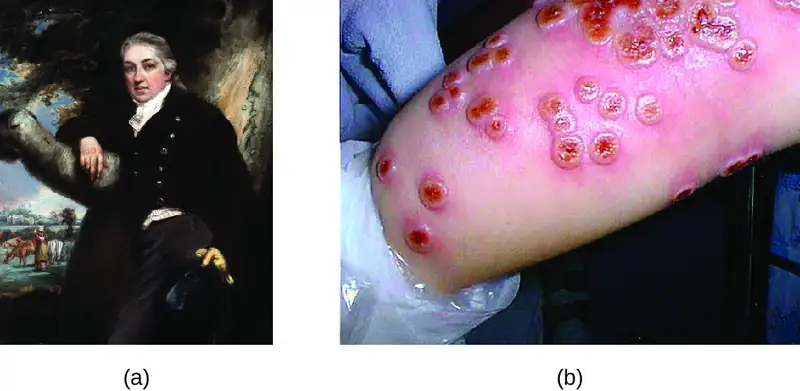
Check Your Understanding
- What is the difference between variolation and vaccination for smallpox?
- Explain why vaccination is less risky than variolation.
Classes of Vaccines¶
For a vaccine to provide protection against a disease, it must expose an individual to pathogen-specific antigens that will stimulate a protective adaptive immune response. By its very nature, this entails some risk. As with any pharmaceutical drug, vaccines have the potential to cause adverse effects. However, the ideal vaccine causes no severe adverse effects and poses no risk of contracting the disease that it is intended to prevent. Various types of vaccines have been developed with these goals in mind. These different classes of vaccines are described in the next section and summarized in Table 18.3.
Live Attenuated Vaccines¶
Live attenuated vaccines expose an individual to a weakened strain of a pathogen with the goal of establishing a subclinical infection that will activate the adaptive immune defenses. Pathogens are attenuated to decrease their virulence using methods such as genetic manipulation (to eliminate key virulence factors) or long-term culturing in an unnatural host or environment (to promote mutations and decrease virulence).
By establishing an active infection, live attenuated vaccines stimulate a more comprehensive immune response than some other types of vaccines. Live attenuated vaccines activate both cellular and humoral immunity and stimulate the development of memory for long-lasting immunity. In some cases, vaccination of one individual with a live attenuated pathogen can even lead to natural transmission of the attenuated pathogen to other individuals. This can cause the other individuals to also develop an active, subclinical infection that activates their adaptive immune defenses.
Disadvantages associated with live attenuated vaccines include the challenges associated with long-term storage and transport as well as the potential for a patient to develop signs and symptoms of disease during the active infection (particularly in immunocompromised patients). There is also a risk of the attenuated pathogen reverting back to full virulence. Table 18.3 lists examples live attenuated vaccines.
Inactivated Vaccines¶
Inactivated vaccines contain whole pathogens that have been killed or inactivated with heat, chemicals, or radiation. For inactivated vaccines to be effective, the inactivation process must not affect the structure of key antigens on the pathogen.
Because the pathogen is killed or inactive, inactivated vaccines do not produce an active infection, and the resulting immune response is weaker and less comprehensive than that provoked by a live attenuated vaccine. Typically the response involves only humoral immunity, and the pathogen cannot be transmitted to other individuals. In addition, inactivated vaccines usually require higher doses and multiple boosters, possibly causing inflammatory reactions at the site of injection.
Despite these disadvantages, inactivated vaccines do have the advantages of long-term storage stability and ease of transport. Also, there is no risk of causing severe active infections. However, inactivated vaccines are not without their side effects. Table 18.3 lists examples of inactivated vaccines.
Subunit Vaccines¶
Whereas live attenuated and inactive vaccines expose an individual to a weakened or dead pathogen, subunit vaccines only expose the patient to the key antigens of a pathogen—not whole cells or viruses. Subunit vaccines can be produced either by chemically degrading a pathogen and isolating its key antigens or by producing the antigens through genetic engineering. Because these vaccines contain only the essential antigens of a pathogen, the risk of side effects is relatively low. Table 18.3 lists examples of subunit vaccines.
Toxoid Vaccines¶
Like subunit vaccines, toxoid vaccines do not introduce a whole pathogen to the patient; they contain inactivated bacterial toxins, called toxoids. Toxoid vaccines are used to prevent diseases in which bacterial toxins play an important role in pathogenesis. These vaccines activate humoral immunity that neutralizes the toxins. Table 18.3 lists examples of toxoid vaccines.
Conjugate Vaccines¶
A conjugate vaccine is a type of subunit vaccine that consists of a protein conjugated to a capsule polysaccharide. Conjugate vaccines have been developed to enhance the efficacy of subunit vaccines against pathogens that have protective polysaccharide capsules that help them evade phagocytosis, causing invasive infections that can lead to meningitis and other serious conditions. The subunit vaccines against these pathogens introduce T-independent capsular polysaccharide antigens that result in the production of antibodies that can opsonize the capsule and thus combat the infection; however, children under the age of two years do not respond effectively to these vaccines. Children do respond effectively when vaccinated with the conjugate vaccine, in which a protein with T-dependent antigens is conjugated to the capsule polysaccharide. The conjugated protein-polysaccharide antigen stimulates production of antibodies against both the protein and the capsule polysaccharide. Table 18.3 lists examples of conjugate vaccines.
Table 18.3
| Classes of Vaccines | ||||
|---|---|---|---|---|
| Class | Description | Advantages | Disadvantages | Examples |
| Live attenuated | Weakened strain of whole pathogen | Cellular and humoral immunity | Difficult to store and transport | Chickenpox, German measles, measles, mumps, tuberculosis, typhoid fever, yellow fever |
| Long-lasting immunity | Risk of infection in immunocompromised patients | |||
| Transmission to contacts | Risk of reversion | |||
| Inactivated | Whole pathogen killed or inactivated with heat, chemicals, or radiation | Ease of storage and transport | Weaker immunity (humoral only) | Cholera, hepatitis A, influenza, plague, rabies |
| No risk of severe active infection | Higher doses and more boosters required | |||
| Subunit | Immunogenic antigens | Lower risk of side effects | Limited longevity | Anthrax, hepatitis B, influenza, meningitis, papillomavirus, pneumococcal pneumonia, whooping cough |
| Multiple doses required | ||||
| No protection against antigenic variation | ||||
| Toxoid | Inactivated bacterial toxin | Humoral immunity to neutralize toxin | Does not prevent infection | Botulism, diphtheria, pertussis, tetanus |
| Conjugate | Capsule polysaccharide conjugated to protein | T-dependent response to capsule | Costly to produce | Meningitis (Haemophilus influenzae, Streptococcus pneumoniae, Neisseria meningitides) |
| No protection against antigenic variation | ||||
| Better response in young children | May interfere with other vaccines | |||
Check Your Understanding
- What is the risk associated with a live attenuated vaccine?
- Why is a conjugated vaccine necessary in some cases?
Micro Connections: DNA Vaccines
DNA vaccines represent a relatively new and promising approach to vaccination. A DNA vaccine is produced by incorporating genes for antigens into a recombinant plasmid vaccine. Introduction of the DNA vaccine into a patient leads to uptake of the recombinant plasmid by some of the patient’s cells, followed by transcription and translation of antigens and presentation of these antigens with MHC I to activate adaptive immunity. This results in the stimulation of both humoral and cellular immunity without the risk of active disease associated with live attenuated vaccines.
Although most DNA vaccines for humans are still in development, it is likely that they will become more prevalent in the near future as researchers are working on engineering DNA vaccines that will activate adaptive immunity against several different pathogens at once. First-generation DNA vaccines tested in the 1990s looked promising in animal models but were disappointing when tested in human subjects. Poor cellular uptake of the DNA plasmids was one of the major problems impacting their efficacy. Trials of second-generation DNA vaccines have been more promising thanks to new techniques for enhancing cellular uptake and optimizing antigens. DNA vaccines for various cancers and viral pathogens such as HIV, HPV, and hepatitis B and C are currently in development.
Some DNA vaccines are already in use. In 2005, a DNA vaccine against West Nile virus was approved for use in horses in the United States. Canada has also approved a DNA vaccine to protect fish from infectious hematopoietic necrosis virus.5 A DNA vaccine against Japanese encephalitis virus was approved for use in humans in 2010 in Australia.6
Clinical Focus: Resolution
Based on Olivia’s symptoms, her physician made a preliminary diagnosis of bacterial meningitis without waiting for positive identification from the blood and CSF samples sent to the lab. Olivia was admitted to the hospital and treated with intravenous broad-spectrum antibiotics and rehydration therapy. Over the next several days, her condition began to improve, and new blood samples and lumbar puncture samples showed an absence of microbes in the blood and CSF with levels of white blood cells returning to normal. During this time, the lab produced a positive identification of Neisseria meningitidis, the causative agent of meningococcal meningitis, in her original CSF sample.
N. meningitidis produces a polysaccharide capsule that serves as a virulence factor. N. meningitidis tends to affect infants after they begin to lose the natural passive immunity provided by maternal antibodies. At one year of age, Olivia’s maternal IgG antibodies would have disappeared, and she would not have developed memory cells capable of recognizing antigens associated with the polysaccharide capsule of the N. meningitidis. As a result, her adaptive immune system was unable to produce protective antibodies to combat the infection, and without antibiotics she may not have survived. Olivia’s infection likely would have been avoided altogether had she been vaccinated. A conjugate vaccine to prevent meningococcal meningitis is available and approved for infants as young as two months of age. However, current vaccination schedules in the United States recommend that the vaccine be administered at age 11–12 with a booster at age 16.
Go back to the previous Clinical Focus box.
Link to Learning
In countries with developed public health systems, many vaccines are routinely administered to children and adults. Vaccine schedules are changed periodically, based on new information and research results gathered by public health agencies. In the United States, the CDC publishes schedules and other updated information about vaccines.
Chapter Review¶
Key Concepts and Summary¶
18.1 Overview of Specific Adaptive Immunity¶
- Adaptive immunity is an acquired defense against foreign pathogens that is characterized by specificity and memory. The first exposure to an antigen stimulates a primary response, and subsequent exposures stimulate a faster and strong secondary response.
- Adaptive immunity is a dual system involving humoral immunity (antibodies produced by B cells) and cellular immunity (T cells directed against intracellular pathogens).
- Antigens, also called immunogens, are molecules that activate adaptive immunity. A single antigen possesses smaller epitopes, each capable of inducing a specific adaptive immune response.
- An antigen’s ability to stimulate an immune response depends on several factors, including its molecular class, molecular complexity, and size.
- Antibodies (immunoglobulins) are Y-shaped glycoproteins with two Fab sites for binding antigens and an Fc portion involved in complement activation and opsonization.
- The five classes of antibody are IgM, IgG, IgA, IgE, and IgD, each differing in size, arrangement, location within the body, and function. The five primary functions of antibodies are neutralization, opsonization, agglutination, complement activation, and antibody-dependent cell-mediated cytotoxicity (ADCC).
18.2 Major Histocompatibility Complexes and Antigen-Presenting Cells¶
- Major histocompatibility complex (MHC) is a collection of genes coding for glycoprotein molecules expressed on the surface of all nucleated cells.
- MHC I molecules are expressed on all nucleated cells and are essential for presentation of normal “self” antigens. Cells that become infected by intracellular pathogens can present foreign antigens on MHC I as well, marking the infected cell for destruction.
- MHC II molecules are expressed only on the surface of antigen-presenting cells (macrophages, dendritic cells, and B cells). Antigen presentation with MHC II is essential for the activation of T cells.
- Antigen-presenting cells (APCs) primarily ingest pathogens by phagocytosis, destroy them in the phagolysosomes, process the protein antigens, and select the most antigenic/immunodominant epitopes with MHC II for presentation to T cells.
- Cross-presentation is a mechanism of antigen presentation and T-cell activation used by dendritic cells not directly infected by the pathogen; it involves phagocytosis of the pathogen but presentation on MHC I rather than MHC II.
18.3 T Lymphocytes and Cellular Immunity¶
- Immature T lymphocytes are produced in the red bone marrow and travel to the thymus for maturation.
- Thymic selection is a three-step process of negative and positive selection that determines which T cells will mature and exit the thymus into the peripheral bloodstream.
- Central tolerance involves negative selection of self-reactive T cells in the thymus, and peripheral tolerance involves anergy and regulatory T cells that prevent self-reactive immune responses and autoimmunity.
- The TCR is similar in structure to immunoglobulins, but less complex. Millions of unique epitope-binding TCRs are encoded through a process of genetic rearrangement of V, D, and J gene segments.
- T cells can be divided into three classes—helper T cells, cytotoxic T cells, and regulatory T cells—based on their expression of CD4 or CD8, the MHC molecules with which they interact for activation, and their respective functions.
- Activated helper T cells differentiate into TH1, TH2, TH17, or memory T cell subtypes. Differentiation is directed by the specific cytokines to which they are exposed. TH1, TH2, and TH17 perform different functions related to stimulation of adaptive and innate immune defenses. Memory T cells are long-lived cells that can respond quickly to secondary exposures.
- Once activated, cytotoxic T cells target and kill cells infected with intracellular pathogens. Killing requires recognition of specific pathogen epitopes presented on the cell surface using MHC I molecules. Killing is mediated by perforin and granzymes that induce apoptosis.
- Superantigens are bacterial or viral proteins that cause a nonspecific activation of helper T cells, leading to an excessive release of cytokines (cytokine storm) and a systemic, potentially fatal inflammatory response.
18.4 B Lymphocytes and Humoral Immunity¶
- B lymphocytes or B cells produce antibodies involved in humoral immunity. B cells are produced in the bone marrow, where the initial stages of maturation occur, and travel to the spleen for final steps of maturation into naïve mature B cells.
- B-cell receptors (BCRs) are membrane-bound monomeric forms of IgD and IgM that bind specific antigen epitopes with their Fab antigen-binding regions. Diversity of antigen binding specificity is created by genetic rearrangement of V, D, and J segments similar to the mechanism used for TCR diversity.
- Protein antigens are called T-dependent antigens because they can only activate B cells with the cooperation of helper T cells. Other molecule classes do not require T cell cooperation and are called T-independent antigens.
- T cell-independent activation of B cells involves cross-linkage of BCRs by repetitive nonprotein antigen epitopes. It is characterized by the production of IgM by plasma cells and does not produce memory B cells.
- T cell-dependent activation of B cells involves processing and presentation of protein antigens to helper T cells, activation of the B cells by cytokines secreted from activated TH2 cells, and plasma cells that produce different classes of antibodies as a result of class switching. Memory B cells are also produced.
- Secondary exposures to T-dependent antigens result in a secondary antibody response initiated by memory B cells. The secondary response develops more quickly and produces higher and more sustained levels of antibody with higher affinity for the specific antigen.
18.5 Vaccines¶
- Adaptive immunity can be divided into four distinct classifications: natural active immunity, natural passive immunity, artificial passive immunity, and artificial active immunity.
- Artificial active immunity is the foundation for vaccination and vaccine development. Vaccination programs not only confer artificial immunity on individuals, but also foster herd immunity in populations.
- Variolation against smallpox originated in the 10th century in China, but the procedure was risky because it could cause the disease it was intended to prevent. Modern vaccination was developed by Edward Jenner, who developed the practice of inoculating patients with infectious materials from cowpox lesions to prevent smallpox.
- Live attenuated vaccines and inactivated vaccines contain whole pathogens that are weak, killed, or inactivated. Subunit vaccines, toxoid vaccines, and conjugate vaccines contain acellular components with antigens that stimulate an immune response.
Multiple Choice¶
18.1 Overview of Specific Adaptive Immunity¶
1. Antibodies are produced by ________.
- plasma cells
- T cells
- bone marrow
- Macrophages
Answer
A
2. Cellular adaptive immunity is carried out by ________.
- B cells
- T cells
- bone marrow
- neutrophils
Answer
B
3. A single antigen molecule may be composed of many individual ________.
- T-cell receptors
- B-cell receptors
- MHC II
- epitopes
Answer
D
4. Which class of molecules is the most antigenic?
- polysaccharides
- lipids
- proteins
- carbohydrates
Answer
C
18.2 Major Histocompatibility Complexes and Antigen-Presenting Cells¶
5. MHC I molecules present
- processed self-antigens from proteasomes.
- processed foreign antigens from phagolysosome.
- antibodies.
- T cell antigens.
Answer
A
6. MHC II molecules present
- processed self-antigens from proteasomes.
- processed foreign antigens from phagolysosomes.
- antibodies.
- T cell receptors.
Answer
B
7. Which type of antigen-presenting molecule is found on all nucleated cells?
- MHC II
- MHC I
- antibodies
- B-cell receptors
Answer
B
8. Which type of antigen-presenting molecule is found only on macrophages, dendritic cells, and B cells?
- MHC I
- MHC II
- T-cell receptors
- B-cell receptors
Answer
B
18.3 T Lymphocytes and Cellular Immunity¶
9. What is a superantigen?
- a protein that is highly efficient at stimulating a single type of productive and specific T cell response
- a protein produced by antigen-presenting cells to enhance their presentation capabilities
- a protein produced by T cells as a way of increasing the antigen activation they receive from antigen-presenting cells
- a protein that activates T cells in a nonspecific and uncontrolled manner
Answer
D
10. To what does the TCR of a helper T cell bind?
- antigens presented with MHC I molecules
- antigens presented with MHC II molecules
- free antigen in a soluble form
- haptens only
Answer
B
11. Cytotoxic T cells will bind with their TCR to which of the following?
- antigens presented with MHC I molecules
- antigens presented with MHC II molecules
- free antigen in a soluble form
- haptens only
Answer
A
12. A ________ molecule is a glycoprotein used to identify and distinguish white blood cells.
- T-cell receptor
- B-cell receptor
- MHC I
- cluster of differentiation
Answer
D
13. Name the T helper cell subset involved in antibody production.
- TH1
- TH2
- TH17
- CTL
Answer
B
18.4 B Lymphocytes and Humoral Immunity¶
14. Which of the following would be a T-dependent antigen?
- lipopolysaccharide
- glycolipid
- protein
- carbohydrate
Answer
C
15. Which of the following would be a BCR?
- CD4
- MHC II
- MHC I
- IgD
Answer
D
16. Which of the following does not occur during the lag period of the primary antibody response?
- activation of helper T cells
- class switching to IgG
- presentation of antigen with MHC II
- binding of antigen to BCRs
Answer
B
18.5 Vaccines¶
17. A patient is bitten by a dog with confirmed rabies infection. After treating the bite wound, the physician injects the patient with antibodies that are specific for the rabies virus to prevent the development of an active infection. This is an example of:
- Natural active immunity
- Artificial active immunity
- Natural passive immunity
- Artificial passive immunity
Answer
D
18. A patient gets a cold, and recovers a few days later. The patient's classmates come down with the same cold roughly a week later, but the original patient does not get the same cold again. This is an example of:
- Natural active immunity
- Artificial active immunity
- Natural passive immunity
- Artificial passive immunity
Answer
A
Matching¶
18.1 Overview of Specific Adaptive Immunity¶
19. Match the antibody class with its description.
| ___IgA | A. This class of antibody is the only one that can cross the placenta. |
| ___IgD | B. This class of antibody is the first to appear after activation of B cells. |
| ___IgE | C. This class of antibody is involved in the defense against parasitic infections and involved in allergic responses. |
| ___IgG | D. This class of antibody is found in very large amounts in mucus secretions. |
| ___IgM | E. This class of antibody is not secreted by B cells but is expressed on the surface of naïve B cells. |
Answer
d, e, c, a, b
18.5 Vaccines¶
20. Match each type of vaccine with the corresponding example.
| ___inactivated vaccine | A. Weakened influenza virions that can only replicate in the slightly lower temperatures of the nasal passages are sprayed into the nose. They do not cause serious flu symptoms, but still produce an active infection that induces a protective adaptive immune response. |
| ___live attenuated vaccine | B. Tetanus toxin molecules are harvested and chemically treated to render them harmless. They are then injected into a patient’s arm. |
| ___toxoid vaccine | C. Influenza virus particles grown in chicken eggs are harvested and chemically treated to render them noninfectious. These immunogenic particles are then purified and packaged and administered as an injection. |
| ___subunit vaccine | D. The gene for hepatitis B virus surface antigen is inserted into a yeast genome. The modified yeast is grown and the virus protein is produced, harvested, purified, and used in a vaccine. |
Answer
C, A, B, D
Fill in the Blank¶
18.1 Overview of Specific Adaptive Immunity¶
21. There are two critically important aspects of adaptive immunity. The first is specificity, while the second is ________.
Answer
memory
22. ________ immunity involves the production of antibody molecules that bind to specific antigens.
Answer
Humoral
23. The heavy chains of an antibody molecule contain ________ region segments, which help to determine its class or isotype.
Answer
constant
24. The variable regions of the heavy and light chains form the ________ sites of an antibody.
Answer
antigen-binding
18.2 Major Histocompatibility Complexes and Antigen-Presenting Cells¶
25. MHC molecules are used for antigen ________ to T cells.
Answer
presentation
26. MHC II molecules are made up of two subunits (α and β) of approximately equal size, whereas MHC I molecules consist of a larger α subunit and a smaller subunit called ________.
Answer
β2 microglobulin
18.3 T Lymphocytes and Cellular Immunity¶
27. A ________ T cell will become activated by presentation of foreign antigen associated with an MHC I molecule.
Answer
cytotoxic
28. A ________ T cell will become activated by presentation of foreign antigen in association with an MHC II molecule.
Answer
helper
29. A TCR is a protein dimer embedded in the plasma membrane of a T cell. The ________ region of each of the two protein chains is what gives it the capability to bind to a presented antigen.
Answer
variable
30. Peripheral tolerance mechanisms function on T cells after they mature and exit the ________.
Answer
thymus
31. Both ________ and effector T cells are produced during differentiation of activated T cells.
Answer
memory
18.4 B Lymphocytes and Humoral Immunity¶
32. ________ antigens can stimulate B cells to become activated but require cytokine assistance delivered by helper T cells.
Answer
T-dependent
33. T-independent antigens can stimulate B cells to become activated and secrete antibodies without assistance from helper T cells. These antigens possess ________ antigenic epitopes that cross-link BCRs.
Answer
repetitive
18.5 Vaccines¶
34. A(n) ________ pathogen is in a weakened state; it is still capable of stimulating an immune response but does not cause a disease.
Answer
attenuated
35. ________ immunity occurs when antibodies from one individual are harvested and given to another to protect against disease or treat active disease.
Answer
Artificial passive
36. In the practice of ________, scabs from smallpox victims were used to immunize susceptible individuals against smallpox.
Answer
variolation
Short Answer¶
18.1 Overview of Specific Adaptive Immunity¶
37. What is the difference between humoral and cellular adaptive immunity?
38. What is the difference between an antigen and a hapten?
39. Describe the mechanism of antibody-dependent cell-mediated cytotoxicity.
18.3 T Lymphocytes and Cellular Immunity¶
40. What is the basic difference in effector function between helper and cytotoxic T cells?
41. What necessary interactions are required for activation of helper T cells and activation/effector function of cytotoxic T cells?
18.5 Vaccines¶
42. Briefly compare the pros and cons of inactivated versus live attenuated vaccines.
Critical Thinking¶
18.2 Major Histocompatibility Complexes and Antigen-Presenting Cells¶
43. Which mechanism of antigen presentation would be used to present antigens from a cell infected with a virus?
44. Which pathway of antigen presentation would be used to present antigens from an extracellular bacterial infection?
18.4 B Lymphocytes and Humoral Immunity¶
45. A patient lacks the ability to make functioning T cells because of a genetic disorder. Would this patient’s B cells be able to produce antibodies in response to an infection? Explain your answer.
Adapted from Microbiology by OpenStax, licensed under CC BY 4.0. Access the original for free at openstax.org. Changes: converted to the web reading format of The Open Book Project.
-
Blaschitz C., Raffatellu M. “Th17 cytokines and the gut mucosal barrier.” J Clin Immunol. 2010 Mar; 30(2):196-203. doi: 10.1007/s10875-010-9368-7. ↩
-
K. Mupapa, M. Massamba, K. Kibadi, K. Kivula, A. Bwaka, M. Kipasa, R. Colebunders, J. J. Muyembe-Tamfum. “Treatment of Ebola Hemorrhagic Fever with Blood Transfusions from Convalescent Patients.” Journal of Infectious Diseases 179 Suppl. (1999): S18–S23. ↩
-
Elizabeth Yale. “Why Anti-Vaccination Movements Can Never Be Tamed.” Religion & Politics, July 22, 2014. http://religionandpolitics.org/2014/07/22/why-anti-vaccination-movements-can-never-be-tamed. ↩
-
N. J. Willis. “Edward Jenner and the Eradication of Smallpox.” Scottish Medical Journal 42 (1997): 118–121. ↩
-
M. Alonso and J. C. Leong. “Licensed DNA Vaccines Against Infectious Hematopoietic Necrosis Virus (IHNV).” Recent Patents on DNA & Gene Sequences (Discontinued) 7 no. 1 (2013): 62–65, issn 1872-2156/2212-3431. doi 10.2174/1872215611307010009. ↩
-
S.B. Halstead and S. J. Thomas. “New Japanese Encephalitis Vaccines: Alternatives to Production in Mouse Brain.” Expert Review of Vaccines 10 no. 3 (2011): 355–64. ↩